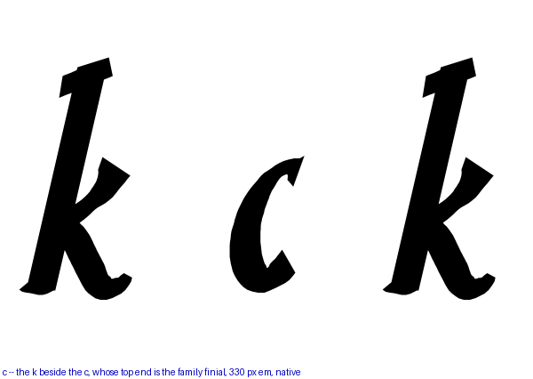
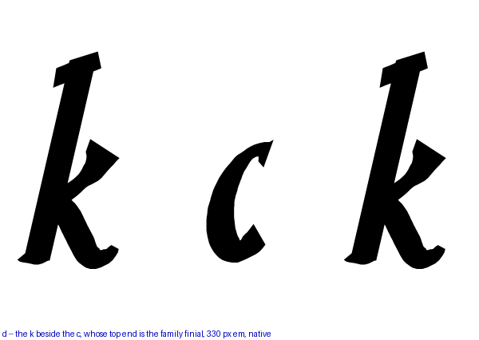
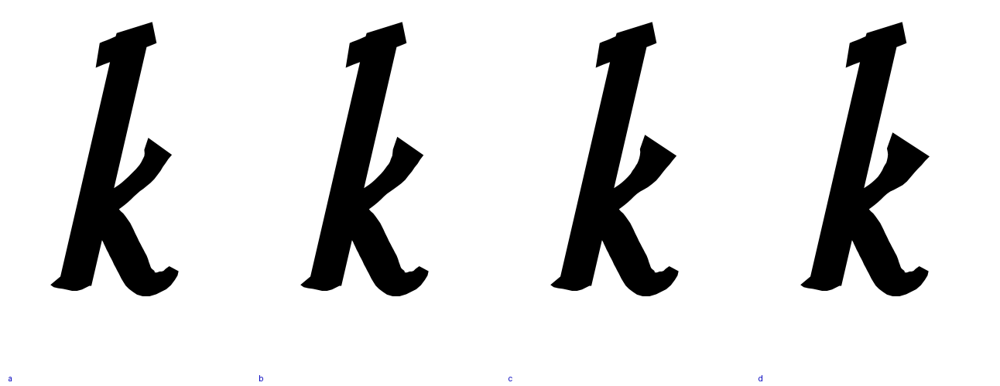
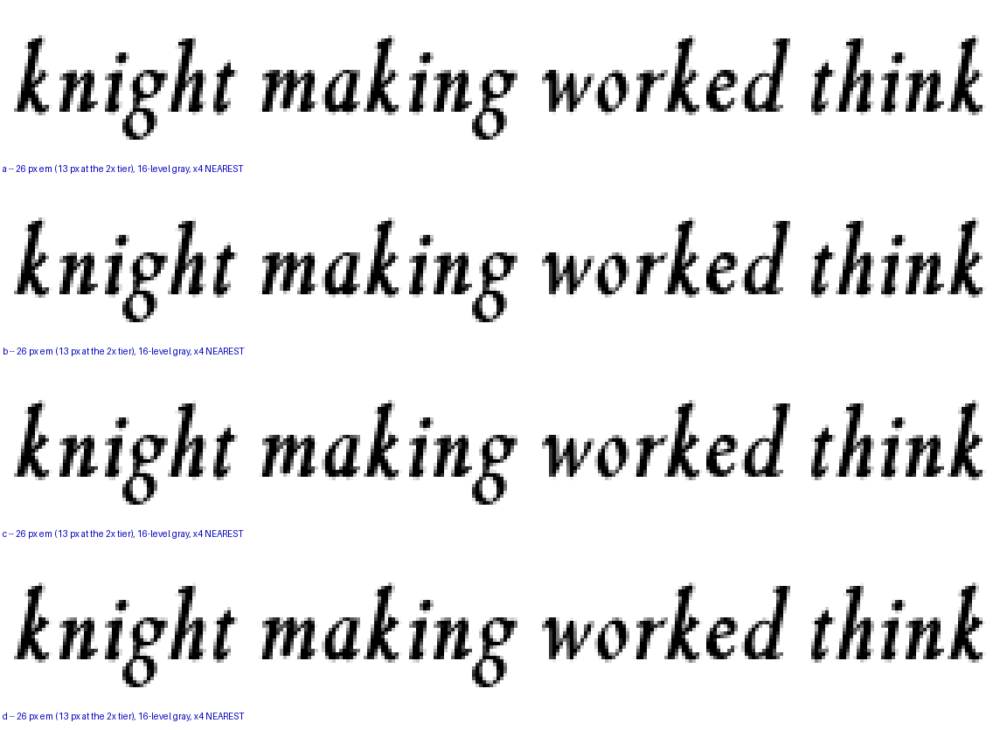

The mid serif is the arm’s terminal, the finial at x-height on the right, and it is thin in a way that measures: against the c’s top end — the family’s reference finial, and the very shape round 276 built this one from — the k’s arm reads 30.1 units thick at the Italic 400 against the c’s 30.9, a match, and 26.4 against 38.8 at the BoldItalic. A third thinner, and thinner in absolute units than the 400’s, because the arm’s width table is declared in design units that do not follow the pen while the c’s finial floor does. So it got lighter as the letter got heavier. Four arms thicken the arm’s end; the k is shown beside the c so the two finials can be judged against each other.
| arm | the arm’s end |
|---|---|
| a | as it stands — 26.4 against the c’s 38.8 |
| b | 1.25× |
| c | 1.50× |
| d | 1.75× |
Thickening the end also lengthens the arm a little, because the family’s finial swells before its face; the reach grows from 502 to 519 units across the ladder. That is why the judgment is on the render and not on a single number — every way I measured the terminal in isolation was confounded by the face’s angle moving as the tip extends. The kick from the last round is in all four.



